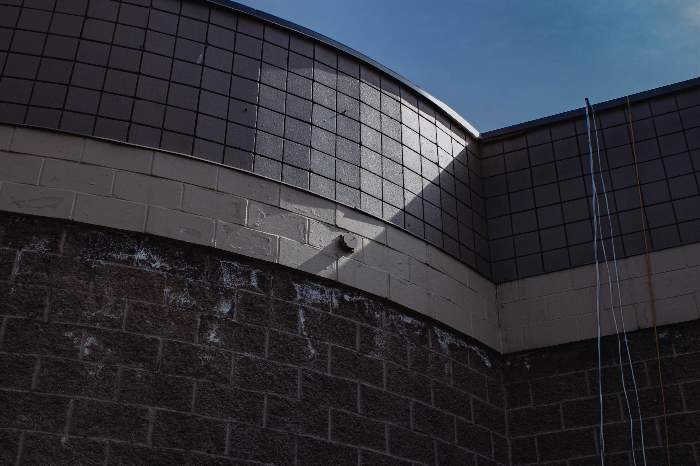
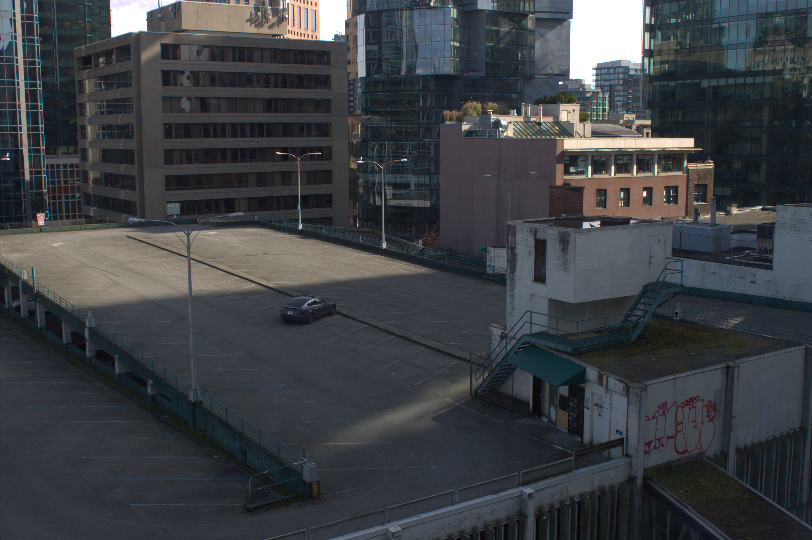

Layers by Jayden Quilay. Taken in Vancouver, British Columbia.
Pretty self-explanatory. Each layer has a different colour and texture.
49°16'09.7"N 123°02'43.5"W (Close enough, the actual coordinate is closer but a map tag is blocking it!)
E 1st Ave

Isolated by Jayden Quilay. Taken in Vancouver, British Columbia.
With this picture, I got extremely lucky that ONE car was present in the parking lot, and it was even in the middle too which was nice for this composition.
49°16'57.1"N 123°06'58.9"W
Taken in a building, in front of Seymour St
Bridge by Jayden Quilay. Taken in Richmond, British Columbia.
This was taken when I went to the Richmond Night Market as a nostalgia trip, saw the opportunity to get this photo of a bridge in and i'd say im pretty happy with the result. It's like a silhouette of a bridge due to its shadow which I think is cool.
49°11'40.3"N 123°07'55.1"W
Parking Lot of the Richmond Night Market.